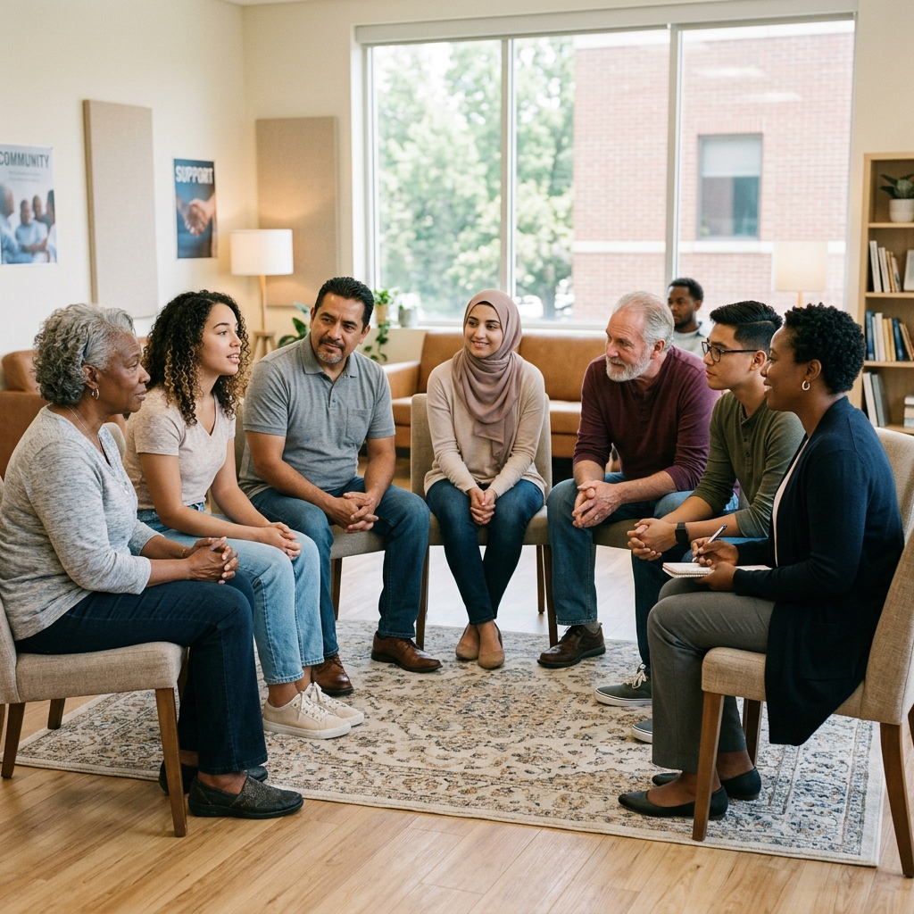

Siamo un'Associazione di Promozione Sociale dedicata a portare strumenti pratici di consapevolezza e benessere nei contesti in cui c'è più bisogno.

C'è un momento in cui il silenzio dentro di te diventa assordante. Non succede di colpo. Arriva piano, si insinua nelle sere, nei lunedì mattina, nei momenti in cui dovresti sentirti bene e invece senti solo... un vuoto. Era anche una solitudine più sottile, più crudele: quella di chi non si sente davvero vista da nessuno. Nemmeno da se stessa. È quello che ho vissuto io.
Qualche tempo dopo la situazione è peggiorata a causa di un lutto... Quando ho incontrato Andrea Magrin e il suo metodo, qualcosa si è mosso in un posto che non sapevo nemmeno di avere. Non era teoria. Non era un altro corso. Era come se qualcuno avesse finalmente acceso una luce in una stanza che tenevo chiusa da tempo. Da anni cercavo qualcosa nei corsi, nei libri, nelle parole degli altri. Poi un giorno una frase semplice mi ha fermata: "se ti manca qualcosa, prova prima a darla."
Ho capito che invece di aspettare che qualcuno mi amasse, potevo scegliere io di amare. Per prima. Così, ho deciso di dare quell'amore a chi ne aveva più bisogno di me, a chi era difficile da amare. Ho iniziato a fare volontariato in carcere. Lì ho incontrato uomini che il mondo aveva etichettato come cattivi, pericolosi, irrecuperabili. Eppure, guardandoli negli occhi, ho visto lo stesso dolore e ferite profonde.
Mentre imparavo a dare amore, ho scoperto che quello che avevo dentro stava esplodendo ed era abbastanza per tutti. Ho approfondito il Metodo Magrin completando l'Accademia e, dopo un anno, l'ho portato in carcere. Nel 2025, questa incredibile esperienza di trasformazione reale è diventata qualcosa di più grande: è nata l'associazione LiberaMente APS. Un luogo vivo che porta cura e sollievo dove c'è sofferenza, affinché nessuno debba restare solo con il proprio dolore.
"Se ti manca qualcosa, prova prima a darla."— Anna, Fondatrice di LiberaMente APS
Uno strumento concreto per la gestione delle emozioni e il benessere delle persone nei contesti collettivi.
Attraverso la consapevolezza corporea, si impara a portare l'attenzione sulla sensazione fisica associata a un pensiero negativo. Osservandola senza giudizio, la sensazione si trasforma e si dissolve. Il pensiero perde la sua carica emotiva e ritorna neutro.
La pratica regolare apre l'accesso a uno stato di quiete mentale in cui il flusso dei pensieri automatici si interrompe. Ne emerge una maggiore lucidità, capacità di scelta e autocontrollo — risorse preziose in situazioni professionali o personali complesse.
I nostri percorsi guidano i partecipanti attraverso un processo strutturato e ripetibile:
Riconoscere e quantificare la risposta corporea a un pensiero difficile su una scala da 0 a 10.
Portare l'attenzione progressivamente in tutto il corpo, sviluppando la presenza e il radicamento.
Avvicinarsi alla pratica con leggerezza e curiosità, senza la pressione del dover riuscire a tutti i costi.
Osservare come la tensione fisica ed emotiva si trasforma e si scioglie attraverso segnali fisiologici naturali.
Mantenere la pratica con costanza e delicatezza, anche quando emergono resistenze o blocchi mentali.
Verificare la completa assenza di reazione corporea o emotiva al pensiero iniziale: il loop è risolto.
Il metodo si adatta alle esigenze dell'ente ospitante, strutturando percorsi su misura che non stravolgono i ritmi quotidiani. Il processo è semplice:
Creiamo valore sul territorio attraverso sei direttrici principali, sviluppando progetti su misura per ogni realtà.
Educazione emotiva per prevenire il disagio giovanile. Lavoriamo con studenti e corpo docenti.
Vedi un Esempio →Supporto al personale sanitario (prevenzione burnout) e accompagnamento ai degenti nei reparti critici.
Scopri di più →Sostegno emotivo e percorsi di consapevolezza per detenuti adulti e giovani ospiti degli istituti minorili.
Scopri di più →Welfare aziendale e team building: forniamo strumenti per la gestione dello stress e la coesione dei gruppi di lavoro.
Scopri di più →Interventi a supporto di persone in situazioni di fragilità o transizione, educatori e volontari di comunità.
Scopri di più →Attività motorie, ricreative e di socializzazione volte a promuovere l'inclusione e il benessere psicofisico.
Scopri di più →Unisciti a noi per portare strumenti concreti di consapevolezza e sostegno emotivo laddove c'è più bisogno. Partecipa alle nostre iniziative, collabora alla realizzazione dei progetti e contribuisci attivamente alla diffusione del benessere collettivo.
Prendi parte alle decisioni dell'associazione e collabora in prima persona.
Accesso a seminari dedicati e approfondimenti pratici sul Metodo Magrin.
Entra a far parte di una comunità attiva di operatori e volontari.